| 0장 | 급할 때 보는 1페이지 요약 — 오늘 뭘 해야 하나 |
| 1장 | ToKHin'이 뭔지 5분 만에 이해하기 — 코인·토큰·가격·정산, 용어 사전 |
| 2장 | 관리자 페이지 들어가기 — 로그인, 세션, 로그아웃 |
| 3장 | 대시보드 지도 — 13개 메뉴가 각각 뭘 하는지 |
| 4장 | [핵심] 경기 등록하기 — 경기 있는 날 낮에 하는 일 |
| 5장 | [핵심] 경기 결과 입력하기 — 경기 끝난 밤에 하는 일 |
| 6장 | [핵심] 정산하기 — 가장 중요하고 가장 위험한 작업 |
| 7장 | 정산 후 점검 — 빠뜨린 경기 없는지 확인 |
| 8장 | 회원 관리 — 등록, 수정, 비활성화, 지갑 복구, 비밀번호 |
| 9장 | 코인 지급 — 개별 지급과 주간 지급 정책 |
| 10장 | 사고 대응 — 오정산·오지급을 되돌리는 방법 (시나리오 A~F) |
| 11장 | 시즌 운영 — 생성 · 시작 · 종료 |
| 12장 | 나머지 메뉴 — 팀 관리, 유동성(b값), 감사 로그, 운영 현황 조회 |
| 13장 | 오류 메시지 사전 — 빨간 글씨가 떴을 때 |
| 14장 | 절대 하면 안 되는 것 8가지 + 인수인계 양식 |
| 언제 | 무엇을 | 어디서 (메뉴) | 걸리는 시간 |
|---|---|---|---|
| 경기 전 (낮~저녁) |
오늘 경기 목록을 등록한다 → 저장하면 마켓이 자동 생성되어 회원들이 거래 시작 |
경기 관리 → 날짜 선택 → 자동 채우기 → 변경 사항 저장하기 | 2~3분 |
| 경기 끝난 뒤 (밤) |
최종 점수를 넣고 경기 상태를 '경기 종료'로 바꾼다 | 경기 관리 → 점수 입력 → 상태 '경기 종료' → 변경 사항 저장하기 | 3~5분 |
| 결과 입력 직후 | 정산한다 (승리 토큰 1주 = 100코인 지급) | 마켓 정산/상태 관리 → 날짜 선택 → 결과 확인 → 정산 실행 | 경기당 10초 |
"점수를 넣고 경기 종료로 저장한 다음, 정산을 누른다."
순서를 바꾸면 시스템이 막습니다. 경기 상태가 '경기 종료'가 아니면 정산 버튼을 눌러도
종료되지 않은 경기는 정산할 수 없습니다 오류가 납니다. 이건 고장이 아니라 안전장치입니다.
| 이런 상황이라면 | 이 메뉴로 가세요 | 장 |
|---|---|---|
| 오늘 경기가 앱에 안 보여요 | 경기 관리 (등록 후 저장을 안 했을 가능성) | 4장 |
| 경기 끝났는데 코인이 안 들어왔대요 | 마켓 정산/상태 관리 (정산 미실행) | 6장 |
| 비가 와서 경기가 취소됐어요 | 경기 관리에서 '취소'로 저장 → 마켓에서 CANCEL(원가 환급) | 6장 |
| 결과를 잘못 눌러 정산했어요 | 정산 점검 → 올바른 결과 선택 → 되돌리고 재정산 (시나리오 A) | 10장 |
| 코인을 실수로 잘못 지급했어요 | 지갑 조정 → 원장에서 '이 지급 취소하기' | 10장 |
| 회원이 로그인이 안 된대요 | 비밀번호 초기화 (전화번호로 리셋) | 8장 |
| 회원 지갑이 '누락'으로 떠요 | 회원 관리 → 지갑 복구 | 8장 |
| 새 학기라 시즌을 새로 열어야 해요 | 시즌 관리 (미정산 마켓 0건 확인 필수) | 11장 |
운영을 하려면 "무엇을 운영하는지"를 알아야 실수를 안 합니다. 야구 규칙보다 쉽습니다.
ToKHin'은 "누가 이길지"를 맞히는 게임이 아니라, "누가 이길 것 같은지"를 사고파는 시장입니다.
기존 승부예측은 팀 하나를 찍고 맞으면 점수를 받는 방식이었습니다. ToKHin'은 다릅니다. 회원은 코인으로 토큰을 삽니다. 토큰은 세 종류뿐입니다.
| 토큰 | 뜻 | 경기가 끝나면 |
|---|---|---|
| HOME | 홈팀이 이긴다 | 맞은 토큰은 1주당 100코인이 되고, 틀린 토큰은 0코인이 됩니다. |
| AWAY | 원정팀이 이긴다 | |
| DRAW | 무승부다 |
HOME·AWAY·DRAW 세 가격의 합은 항상 100입니다. 화면에서 HOME 58.7 / AWAY 37.4 / DRAW 3.9
처럼 보이는 숫자가 그것입니다. 이 숫자는 "홈팀이 이길 확률 58.7%"라고 시장이 보고 있다는 뜻입니다.
토큰은 "이 팀이 이기면 100원 주는 쿠폰"입니다. 홈팀이 유력하면 그 쿠폰이 비싸게(예: 70코인) 팔리고, 약체면 싸게(예: 20코인) 팔립니다. 경기가 끝나면 이긴 팀 쿠폰만 100코인으로 바뀌고 나머지는 휴지가 됩니다. 운영진이 하는 "정산"은 이 쿠폰을 현금(코인)으로 바꿔주는 작업입니다.
| 용어 | 쉬운 설명 |
|---|---|
| 코인 | 앱 안에서 쓰는 돈. 현금 가치는 없습니다. 시즌마다 따로 관리됩니다. |
| 지갑(wallet) | 회원 한 명의 한 시즌 코인 잔액. 회원이 시즌 3에 4,100코인을 갖고 있으면 "시즌 3 지갑에 4,100"입니다. |
| 토큰 / 포지션 | 회원이 보유 중인 HOME/AWAY/DRAW 쿠폰. "포지션 3건"은 아직 결과를 기다리는 보유분이 3개라는 뜻. |
| 마켓(market) | 경기 하나에 딸린 거래판. 경기 1개 = 마켓 1개입니다. 경기를 저장하면 자동으로 만들어집니다. |
| 정산(settle) | 경기 결과를 확정해 이긴 토큰 보유자에게 1주당 100코인을 지급하는 것. 되돌리기가 매우 어렵습니다. |
| CLOSE | 거래만 막는 것. 코인은 움직이지 않습니다. 결과가 아직 애매할 때 "잠깐 멈춤" 용도. |
| CANCEL | 경기가 무산됐을 때 사용. 회원이 산 가격 그대로 코인을 돌려받습니다(원가 환급). 아무도 이득·손해가 없습니다. |
| 시즌(season) | 학기 같은 개념. 시즌이 바뀌면 코인이 초기화되고 이전 시즌은 잠깁니다. |
| 원장(ledger) / 거래내역 | 코인이 오간 모든 기록. 매수·매도·정산·지급이 한 줄씩 쌓입니다. 사고 조사할 때 여기를 봅니다. |
| b값(유동성) | 가격이 얼마나 쉽게 출렁이는지 정하는 숫자. 클수록 가격이 천천히 움직입니다. 평소엔 건드리지 마세요. |
| 뱃지 | 뜻 | 이때 운영진이 할 일 |
|---|---|---|
| OPEN | 거래 중 | 경기 전·경기 중의 정상 상태. 아무것도 안 해도 됩니다. |
| CLOSED | 거래 중지 | 결과가 정해지면 정산하세요. 방치하면 회원 코인이 묶입니다. |
| SETTLED | 정산 완료 | 끝. 더 이상 손댈 수 없습니다(되돌리려면 10장). |
| CANCELED | 취소·환급 완료 | 끝. 회원들은 원금을 돌려받았습니다. |
/admin을 붙여 접속합니다. (예: https://…앱주소…/admin, 로컬 테스트라면 http://localhost:3000/admin)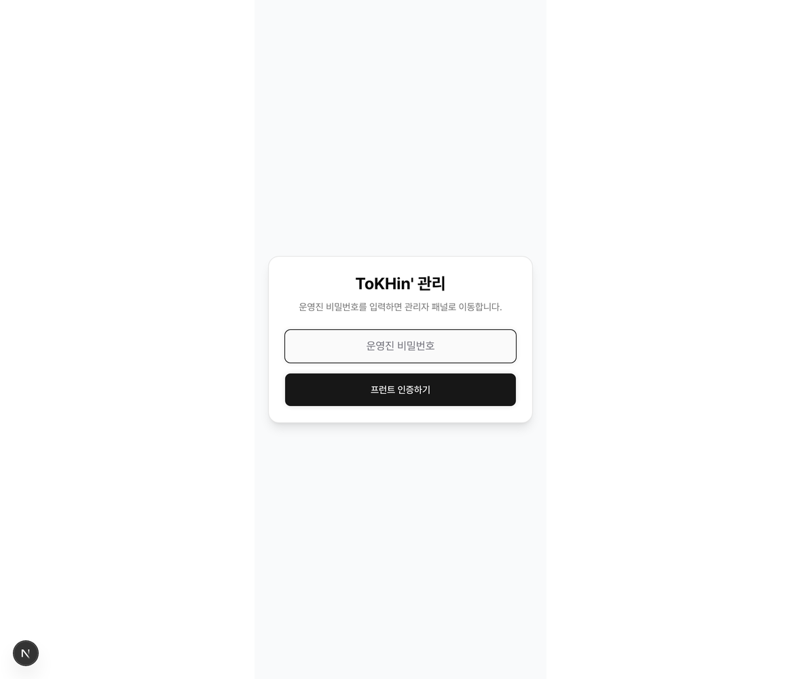
ToKHin'은 휴대폰 사용을 전제로 만든 앱이라, 일부 관리자 화면(회원 관리, 감사 로그 등)은 PC에서도 가운데에 좁게 표시됩니다. 고장이 아니니 그대로 쓰시면 됩니다. 다만 경기 관리와 마켓 정산은 표가 넓어서 PC에서 하는 것을 강력히 권장합니다. 휴대폰으로 정산하다 손가락이 미끄러지면 되돌릴 수 없습니다.
로그인하면 아래 화면이 나옵니다. 카드마다 접속 버튼이 있고, 들어간 뒤에는 ← 메뉴로 돌아가기로 나옵니다.
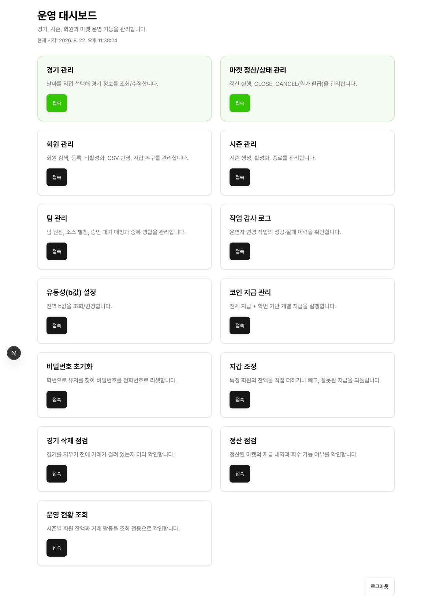
| 메뉴 | 무엇을 하는 곳 | 사용 빈도 |
|---|---|---|
| 경기 관리 (연두색) | 날짜별 경기 등록·수정, 점수 입력, 경기 상태 변경. 저장하면 마켓이 자동 생성됩니다. | 매 경기일 2회 |
| 마켓 정산/상태 관리 (연두색) | 정산 실행, 거래 중지(CLOSE), 취소·환급(CANCEL) | 매 경기일 1회 |
| 회원 관리 | 회원 검색·추가·수정·비활성화, CSV 일괄 등록, 지갑 복구, 비밀번호 초기화 | 학기 초 집중 |
| 시즌 관리 | 시즌 생성 / 시작 / 종료 | 시즌 전환 시 |
| 팀 관리 | 팀 정보, 외부 사이트 팀명 별칭, 승인 대기 매핑, 중복 팀 병합 | 가끔 |
| 작업 감사 로그 | 관리자 작업 이력(성공/실패) 확인 | 사고 조사 시 |
| 유동성(b값) 설정 | 가격 민감도 전역 설정 | 거의 안 씀 |
| 코인 지급 관리 | 학번으로 특정 회원에게 코인 지급 / 주간 지급 정책 | 이벤트 시 |
| 비밀번호 초기화 | 학번을 입력해 비밀번호를 전화번호로 리셋 | 수시 |
| 지갑 조정 | 특정 회원 잔액 가감, 잘못된 관리자 지급 되돌리기 | 사고 시 |
| 경기 삭제 점검 | 경기를 지워도 되는지(거래가 걸려 있는지) 미리 확인 — 조회 전용 | 사고 시 |
| 정산 점검 | 정산 지급 내역 확인, 잔액 점검, 잘못된 결과 되돌리기·재정산 (오정산 복구의 핵심) | 사고 시 |
| 운영 현황 조회 | 시즌별 회원 잔액·활동 통계 — 조회 전용 | 가끔 |
경기 삭제 점검 · 운영 현황 조회 · 작업 감사 로그는 조회 전용입니다. 정산 점검도 마켓 선택과 미리보기까지는 조회이지만, 상세 안의 빨간 정산 되돌리고 재정산 버튼은 즉시 회원 코인을 회수·재지급합니다. 정산 실행 · CANCEL · 지갑 조정 실행 · 시즌 시작/종료 · 개별 지급 실행도 누르는 즉시 데이터나 회원 코인이 움직입니다.
회원들이 앱에서 거래를 하려면, 그날 경기가 등록되어 있고 마켓이 만들어져 있어야 합니다. 이 작업을 안 하면 회원들은 "오늘 경기가 없어요"라는 화면만 봅니다.
HOME 47.5 / AWAY 47.5 / DRAW 5.0인지 확인합니다. (합이 100이 아니면 저장이 거부됩니다.)경기 저장 완료. N개 마켓이 자동 생성되었고 M개는 기존 마켓을 유지했습니다.를 확인합니다.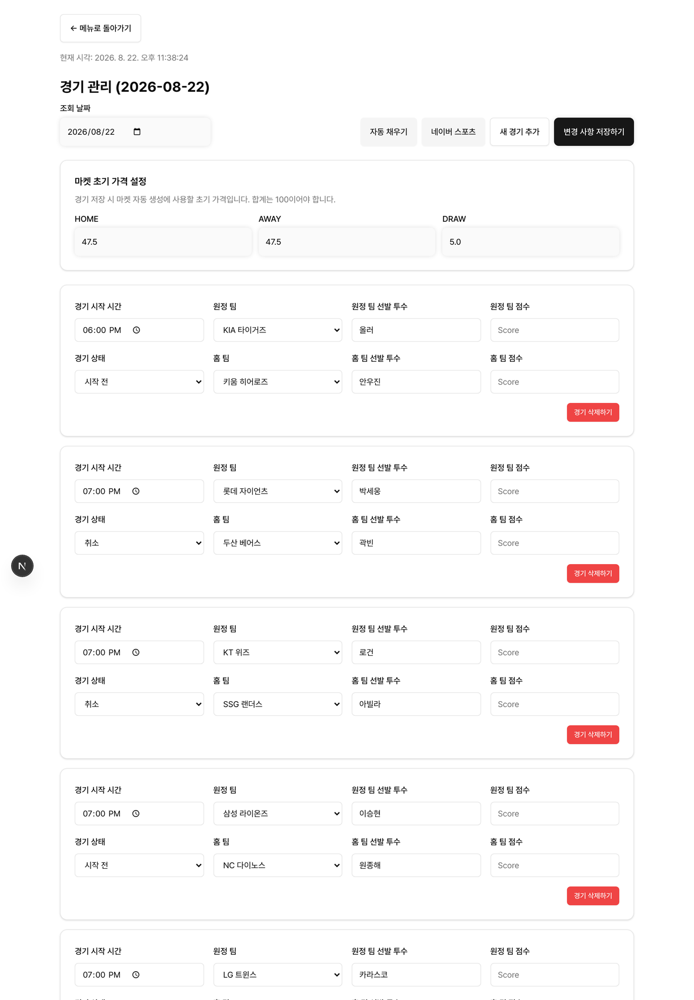
자동 채우기는 화면에만 채워 넣는 미리보기입니다. 변경 사항 저장하기를 눌러야 데이터베이스에 저장되고, 그때 비로소 마켓이 생성되어 회원들이 거래할 수 있습니다. "자동 채우기 했는데 앱에 안 보인다"는 문의의 90%가 이 실수입니다.
| 상황 | 대처 |
|---|---|
| 알림창에 "승인 필요: ○○팀"이 떴다 | 외부 사이트의 팀 이름을 우리 시스템의 팀과 연결하지 못한 경우입니다. 그 경기는 제외된 채 저장됩니다. 팀 관리 → 승인 대기에서 연결해 준 뒤(12장) 자동 채우기를 다시 하세요. 임의로 새 팀을 만들면 안 됩니다. |
| 같은 경기가 두 번 들어갔다 | 중복 카드의 경기 삭제하기(빨간 버튼)를 누르고 저장하세요. 단, 이미 회원이 거래한 경기라면 삭제하면 안 됩니다. 먼저 경기 삭제 점검(10장 시나리오 E)으로 확인하세요. |
| 선발 투수가 비어 있다 | 거래에는 영향이 없습니다. 정보성 표시일 뿐이니 나중에 채워도 됩니다. |
| 경기 시간이 변경됐다 | 해당 카드의 시간만 고치고 저장하면 됩니다. 마켓은 그대로 유지됩니다(중복 생성되지 않습니다). |
원칙적으로 바꾸지 마세요. 47.5 / 47.5 / 5.0은 "누가 이길지 모른다"는 중립 상태를 뜻합니다. 전력 차가 큰 경기라도 회원들의 거래로 가격이 알아서 벌어집니다. 운영진이 미리 기울여 놓으면 먼저 산 사람에게 부당한 이득이 갑니다.
정산의 전제 조건입니다. 점수와 상태를 저장하지 않으면 정산 자체가 불가능합니다.
| 상태 | 언제 쓰나 | 정산 가능? |
|---|---|---|
| 시작 전 | 경기 전 기본값 | 불가 (거래 중) |
| 경기 중 | 진행 중 표시용 | 불가 |
| 경기 종료 | 정상 종료. 점수와 함께 반드시 저장 | 가능 — 정산하세요 |
| 취소 | 우천 취소, 서스펜디드 등 무산 | 정산 금지 — CANCEL(원가 환급) 사용 |
점수는 정산 결과의 자동 감지에 쓰입니다. 예를 들어 홈 3 : 원정 2로 저장하면 정산 화면이 결과를 자동으로 HOME으로 골라줍니다. 점수를 뒤집어 넣으면 자동 감지도 뒤집힙니다. 저장 전에 원정/홈 칸을 헷갈리지 않았는지 꼭 확인하세요. (화면에서 왼쪽이 원정 팀, 오른쪽이 홈 팀입니다.)
아직 정산 전이라면 점수를 고쳐 다시 저장하면 됩니다. 정산 후에는 점수를 고쳐도 지급된 코인은 바뀌지 않습니다. 그때는 10장 시나리오 A로 가야 합니다.
정산은 회원들의 코인이 실제로 늘어나는 순간입니다. 버튼 하나로 수십 명의 잔액이 바뀌고, 화면에서 되돌리는 기능은 없습니다. 그래서 이 장만큼은 천천히 읽으세요.
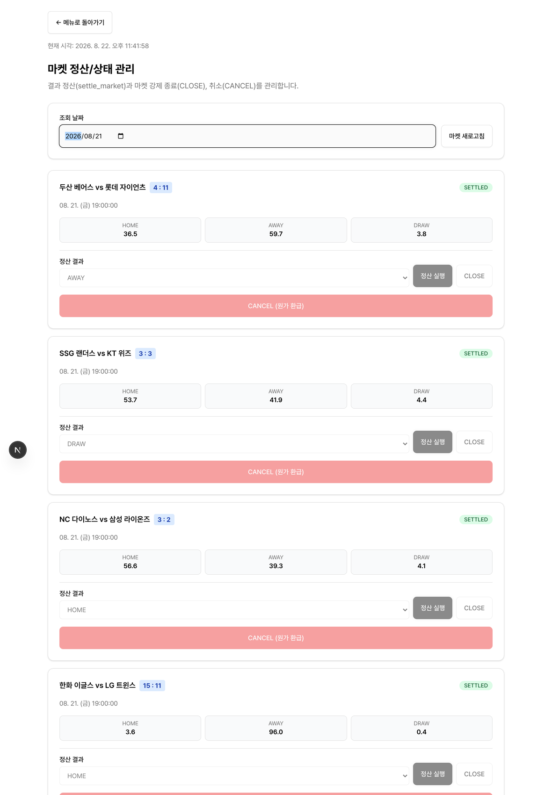
경기 결과(3 : 2)에서 자동 감지됨이라고 적혀 있으면 시스템이 점수를 보고 결과를 골라둔 것입니다.정산 완료: 두산 베어스 vs 롯데 자이언츠 (AWAY) / 12명, 총 3,400 코인 배분
인원 수는 그 마켓에 포지션을 보유한 사람 수이고, 금액은 이긴 토큰에만 지급된 총액입니다.
아무도 정답 토큰을 안 샀다면 N명, 총 0 코인 배분이 나올 수 있습니다. 정상입니다.
KBO는 연장 12회까지도 승부가 안 나면 무승부입니다. 점수가 3 : 3처럼 같으면 시스템이
자동으로 DRAW를 골라줍니다. 그대로 정산 실행을 누르면 DRAW 토큰 보유자만
1주당 100코인을 받습니다. 실제로 화면 5의 SSG 랜더스 vs KT 위즈 3:3 경기가 DRAW로 정산된 예입니다.
| 버튼 | 하는 일 | 코인 이동 |
|---|---|---|
| CLOSE | 더 이상 사고팔지 못하게 거래만 잠급니다 | 없음 |
| 정산 실행 | 결과를 확정하고 코인을 지급합니다 | 있음 (증가) |
| CANCEL | 모두에게 산 가격 그대로 돌려줍니다 | 있음 (원금 복귀) |
CLOSE를 쓰는 대표 상황:
CLOSE된 마켓은 나중에 그대로 정산하거나 CANCEL할 수 있습니다. 화면에도
CLOSED 상태입니다. 결과를 선택해 정산하거나 필요 시 취소할 수 있습니다.라고 안내가 뜹니다.
단, CLOSE 상태로 방치하면 회원 코인이 계속 묶여 있으니 당일 안에 정리하세요.
경기가 취소되었습니다. 정산하지 말고 CANCEL(원가 환급)을 사용하세요.
동시에 정산 실행 버튼이 잠깁니다.마켓을 취소하면 모든 유저의 보유 포지션이 원가로 환급됩니다. 계속할까요?
→ 맞으면 확인.… 취소 완료: N명에게 총 X 코인 환급을 확인합니다. 뱃지가 CANCELED로 바뀝니다.경기가 열리지 않았으니 누구도 맞히거나 틀린 게 아닙니다. 그래서 각자 실제로 지불한 금액을 그대로 돌려줍니다. 70코인에 산 사람은 70코인을, 30코인에 산 사람은 30코인을 받습니다. "모두에게 100코인"이 아니니 오해하지 마세요.
같은 마켓을 다시 정산하려 하면 이미 정산된 마켓입니다 오류가 납니다.
결과를 잘못 골랐다면 정산 점검에서 기존 지급을 회수하고 올바른 결과로 재정산할 수 있습니다.
다만 지급받은 회원이 코인을 이미 사용해 회수 잔액이 부족하면 실행이 차단됩니다.
1초 더 확인하는 것이 복구 작업을 없애 줍니다.
정산 점검 메뉴는 정산된 마켓의 지급 내역을 확인하고, 결과를 잘못 선택한 정산을 안전하게 되돌리는 곳입니다. 날짜를 넣으면 그날 정산 완료된 마켓만 나열되고, 각 카드의 점검 버튼을 누르면 지급액과 회수 가능 여부가 열립니다.
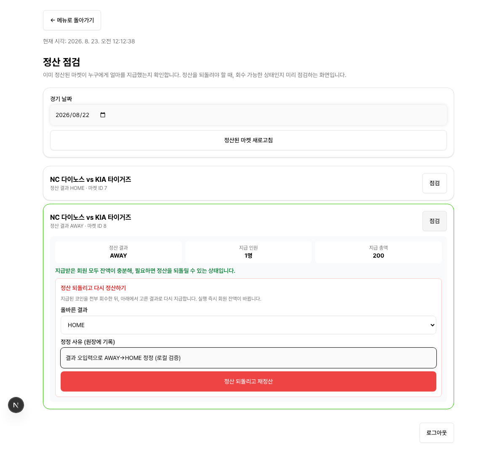
정산 되돌리고 재정산을 누르면 기존 승자에게 지급한 코인을 회수하고, 새로 고른 결과의 승자에게 즉시 다시 지급합니다. 실행 전 마켓 ID · 기존 결과 · 올바른 결과 · 정정 사유를 두 사람이 함께 확인하세요.
되돌릴 정산 기록이 없습니다가 뜨면 이 기능 배포 전에 정산된 과거 마켓이거나
스냅샷이 없는 마켓입니다. 이 경우에만 개발 담당자에게 마켓 ID를 전달하세요.
잔액 부족 회원이 표시되면 자동 복구를 실행하지 말고 10장 시나리오 A의 안내를 따르세요.
며칠 지난 경기라도 정산은 언제든 가능합니다. 날짜를 과거로 돌려 조회한 뒤 정산하면 됩니다. 단, 아래 두 가지만 확인하세요.
시즌이 활성 상태가 아니어서 정산할 수 없습니다 오류가 납니다 → 개발 담당자에게 문의.학기 초에 가장 바쁜 메뉴입니다. 회원 등록·수정·비활성화·지갑 복구·비밀번호 초기화를 한 화면에서 합니다.
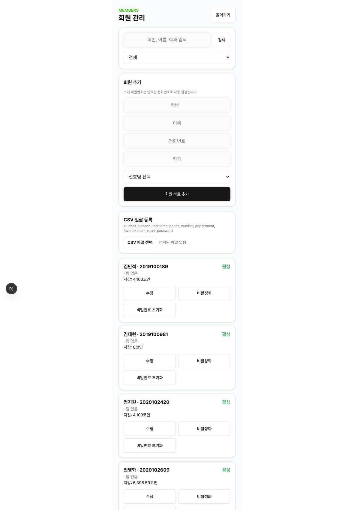
입력한 전화번호가 그대로 초기 비밀번호가 됩니다(예: 01012345678).
회원은 학번으로 로그인하고, 첫 로그인 때 새 비밀번호로 바꾸라는 안내를 받습니다.
그러니 전화번호를 정확히 입력해야 합니다.
학기 초 신입 회원을 한꺼번에 넣을 때 씁니다. 엑셀에서 만들고 CSV로 저장하면 됩니다.
| 열 이름 (첫 줄) | 내용 |
|---|---|
student_number | 학번 (숫자) |
username | 이름 |
phone_number | 전화번호 (초기 비밀번호가 됩니다) |
department | 학과 |
favorite_team | 선호팀 이름 또는 약칭 (예: KIA, 두산) |
reset_password | 비밀번호도 초기화할지 여부 (비워도 됨) |
새로 만들지 않고 기존 회원 정보를 갱신합니다. 이름·학과·선호팀 일괄 수정에도 쓸 수 있습니다.
회원 카드의 지갑 표시가 "누락"이면, 그 회원은 현재 시즌 지갑이 없어 거래를 할 수 없는 상태입니다. (시즌 전환 시점에 가입했거나, 등록 과정에 문제가 있었던 경우)
| 방법 | 쓰는 상황 | 결과 |
|---|---|---|
| 회원 관리 → 카드의 비밀번호 초기화 | 이미 회원 목록을 보고 있을 때 | 비밀번호가 등록된 전화번호로 리셋됩니다. 회원은 전화번호로 로그인한 뒤 새 비밀번호를 정하게 됩니다. |
| 대시보드 → 비밀번호 초기화 메뉴 | 학번만 알고 있을 때 (문의 응대 중) |
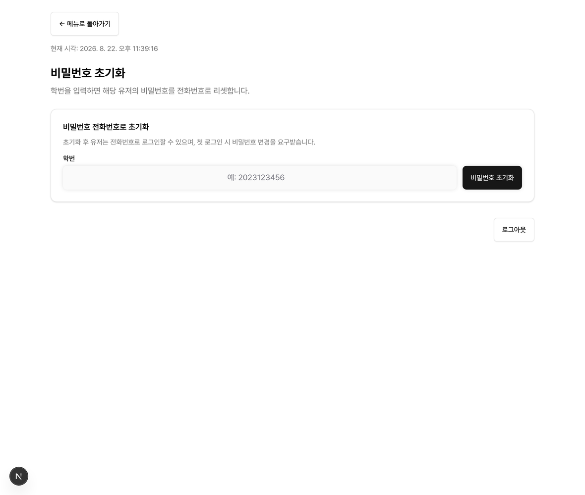
학번 2023123456의 비밀번호를 전화번호로 초기화합니다. 계속하시겠습니까? 확인창이 뜹니다.학번만 알면 누구나 비밀번호를 리셋해 달라고 요청할 수 있습니다. 리셋된 비밀번호는 전화번호이므로, 남의 계정을 탈취하는 데 쓰일 수 있습니다. 반드시 본인이 맞는지(학생증, 단톡방 실명 등) 확인한 뒤 실행하세요.
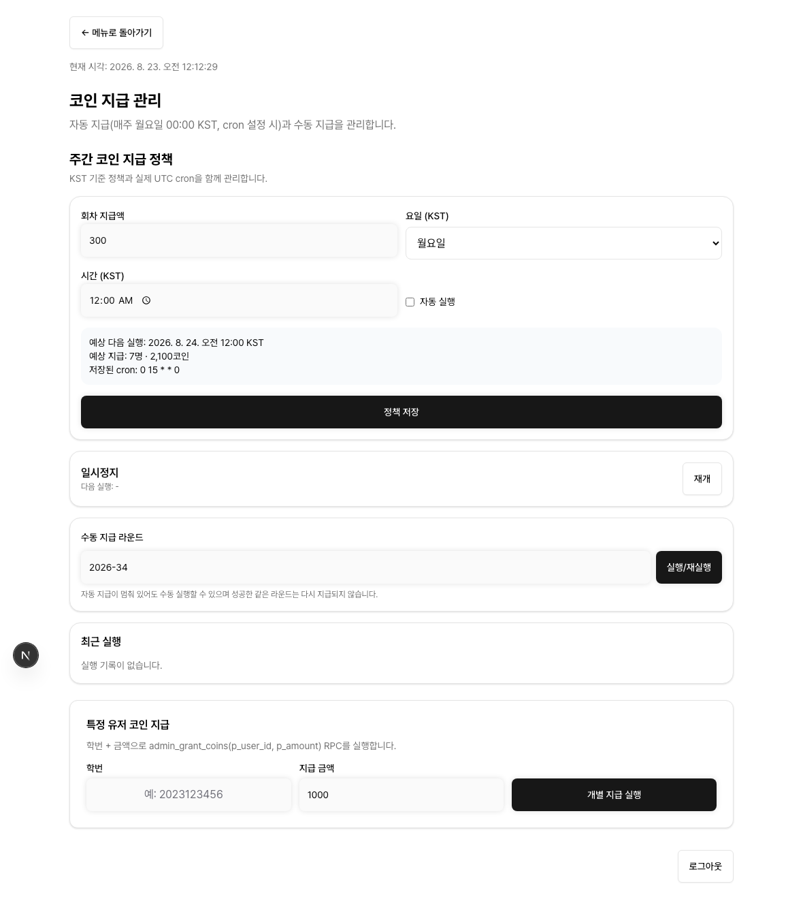
홍길동(2023123456)에게 1,000 코인 지급 완료 (현재 잔고 5,100)등록되지 않은 학번을 넣으면 입력한 학번의 유저를 찾을 수 없습니다.가 뜹니다. 회원 관리에서 학번을 먼저 확인하세요.
요일·시각을 바꾸면 다음 자동 실행 일정이 달라집니다. 수동 실행은 실제 지급을 발생시키므로
같은 주차를 이미 지급했는지 확인하고 실행하세요. 화면에 과거 오류
weekly_grant_next_run(...) does not exist가 다시 나타나면 버튼을 반복해서 누르지 말고 개발 담당자에게 캡처를 전달하세요.
운영을 하다 보면 반드시 실수가 납니다. 중요한 건 당황해서 아무 버튼이나 더 누르지 않는 것입니다. 아래 원칙 3가지를 먼저 기억하세요.
증상 — HOME이 이겼는데 AWAY로 정산했다. 엉뚱한 회원들에게 코인이 지급됐다.
복구 원리 — 정산할 때 저장된 포지션·지급 스냅샷으로 기존 지급을 회수하고, 올바른 결과의 토큰 보유자에게 자동으로 다시 지급합니다. 마켓 결과와 원장, 감사 로그도 함께 정정됩니다.
8/21 롯데:두산 결과 오입력 AWAY→HOME 정정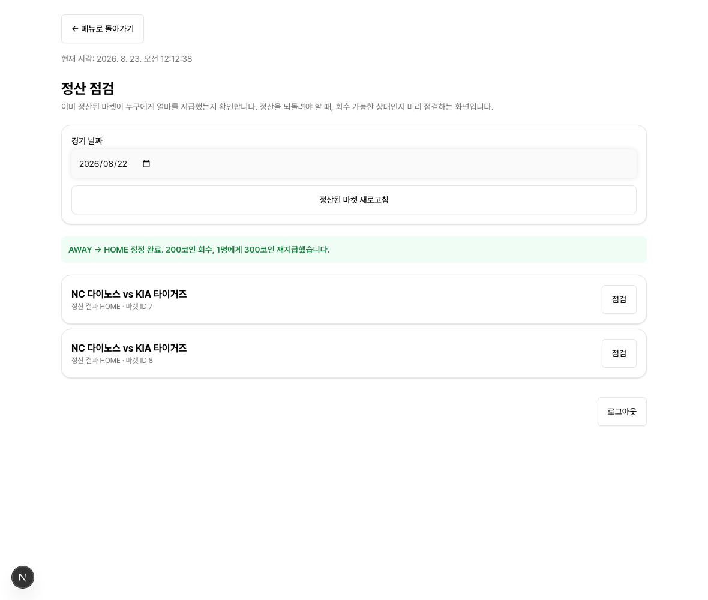
잘못 지급받은 회원이 그 코인을 이미 사용했다면 현재 잔액이 회수액보다 적을 수 있습니다. 이 경우 화면이 부족한 회원과 금액을 보여 주고 자동 복구를 막습니다.
부족 금액을 임의로 지갑 조정하거나 여러 번 나눠 빼지 말고,
마켓 ID · 부족 회원 · 부족 금액 · 정정할 결과를 캡처해 개발 담당자에게 전달하세요.
되돌릴 정산 기록이 없습니다가 표시되는 과거 마켓도 같은 방식으로 문의합니다.
코인 잔액이 갑자기 줄면 회원은 반드시 문의합니다. 조정을 마친 뒤 단톡방/공지에 ① 어떤 경기 ② 무엇이 잘못됐는지 ③ 어떻게 바로잡았는지를 짧게 알리세요. 회원 앱의 거래내역에는 여러분이 적은 조정 사유가 그대로 표시됩니다.
증상 — 우천 취소 경기인데 실수로 HOME/AWAY로 정산됨.
대처 — 시나리오 A와 동일합니다. 다만 "정답 토큰"이 없으므로, 정산으로 지급된 금액을 전부 회수한 뒤, 원래대로라면 각자 산 가격만큼 돌려받았어야 합니다. 보유자별 매수 금액은 회원 원장의 "매수" 기록으로 확인할 수 있습니다.
경기 관리에서 상태를 '취소'로 저장해 두기만 하면, 정산 화면이 자동으로 정산 버튼을 잠그고 빨간 경고를 띄웁니다. 취소 경기는 무조건 먼저 상태부터 '취소'로 저장하세요.
이건 원클릭으로 되돌릴 수 있습니다. 관리자 지급(ADMIN_GRANT)만 해당됩니다.
매수·매도·정산·주간 지급·시즌 지급에는 취소 버튼이 없습니다. 또 한 번 취소한 지급은 다시 취소할 수 없습니다. 금액만 틀린 경우(1000을 100으로 줘야 했다면)에는 취소 후 올바른 금액으로 다시 지급하면 깔끔합니다.
| 확인 순서 | 조치 |
|---|---|
| 회원 관리에서 그 회원 카드의 지갑 표시 | "누락"이면 지갑 복구 (8-4) |
| 카드 오른쪽의 활성/비활성 | "비활성"이면 재활성화 |
| 로그인 자체가 안 되는 경우 | 비밀번호 초기화 후 전화번호로 로그인 안내 (8-5) |
| 특정 경기만 거래가 안 되는 경우 | 그 마켓이 CLOSED/SETTLED가 아닌지 확인. 정상 동작일 수 있습니다. |
| 지난 시즌 경기를 거래하려는 경우 | 지난 시즌은 읽기 전용입니다. 정상입니다. |
이미 회원이 거래한 경기를 지우면 그 거래 기록과 코인 정합성이 깨집니다.
거래 기록이 없어 이 경기는 안전하게 삭제하거나 다시 만들 수 있습니다.
→ 경기 관리에서 경기 삭제하기 후 저장.이미 참가자 거래가 있어 삭제할 수 없습니다.
→ 삭제 금지. 경기 관리에서 정보를 수정하거나, 무산된 경기라면 CANCEL(원가 환급)로 정리합니다.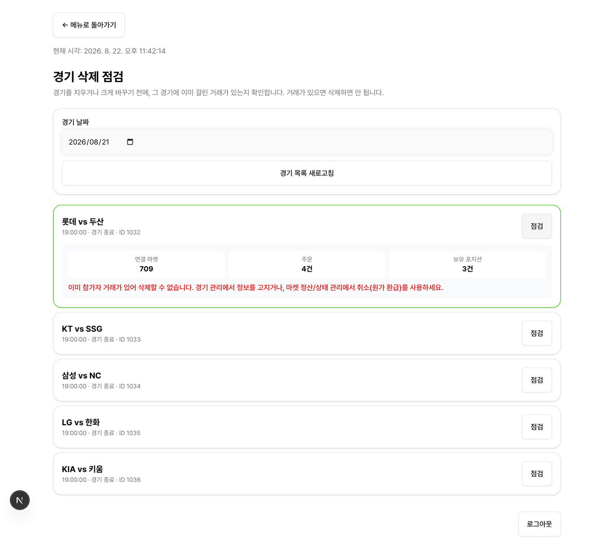
운영진이 비밀번호를 공유하기 때문에, 로그에는 "운영진"이라고만 남고 개인은 구분되지 않습니다. 또 정산 실행 자체는 이 로그에 남지 않습니다. 그래서 14장의 수기 운영 로그가 중요합니다.
시즌은 학기와 비슷합니다. 시즌이 바뀌면 모두의 코인이 초기화되고 이전 시즌 기록은 잠깁니다.
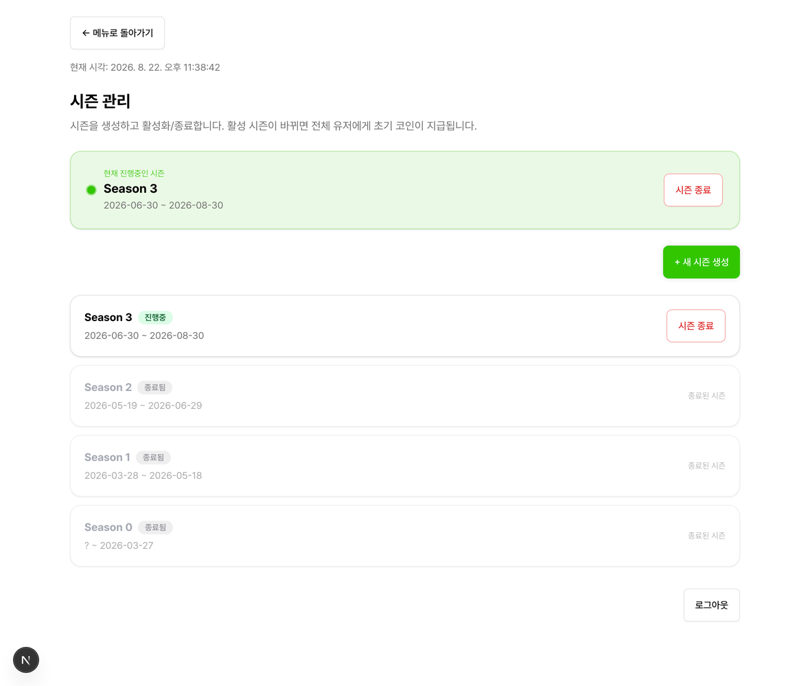
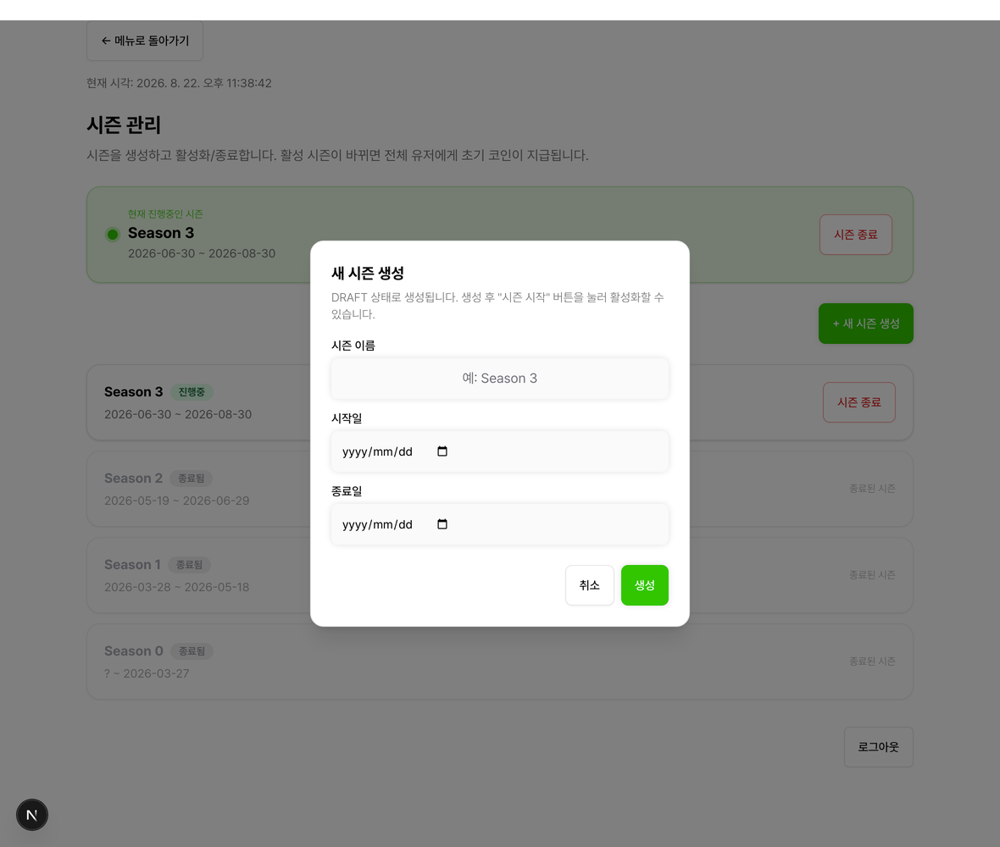
시작에 실패하면 대개 미정산 마켓이 남아 있는 것입니다. 6장으로 돌아가 남은 마켓을 정산/취소한 뒤 다시 시도하세요.
"지난 시즌 종료 → 새 시즌 시작"을 따로 하지 말고, 새 시즌의 [시즌 시작]만 누르세요. 이전 시즌은 자동으로 종료 처리되므로, 서비스가 멈추는 공백이 생기지 않습니다.
탭이 3개입니다: 팀 목록 · 승인 대기 · 팀 병합.
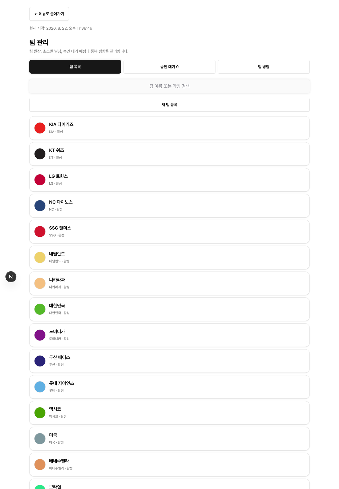
| 탭 | 무엇을 하나 | 언제 쓰나 |
|---|---|---|
| 팀 목록 | 팀 이름·약칭·색상 수정, 새 팀 등록, 별칭 등록 | 팀명이 바뀌었을 때 |
| 승인 대기 | 자동 채우기가 못 알아본 외부 팀명을 우리 팀과 연결 | 4장에서 "승인 필요" 알림이 떴을 때 |
| 팀 병합 | 같은 팀이 중복 등록됐을 때 하나로 합침 (실행 전 비밀번호 재확인) | 드묾. 실행 전 개발 담당자와 상의 권장 |
KBO 사이트는 "KIA", 네이버는 "기아 타이거즈"처럼 같은 팀을 다르게 부릅니다. 별칭은 "이 이름도 우리 KIA 타이거즈다"라고 알려주는 사전입니다. 별칭을 잘 등록해 두면 자동 채우기 실패가 줄어듭니다. 새 팀을 만들지 말고 별칭을 다세요. 새 팀을 만들면 데이터가 갈라집니다.
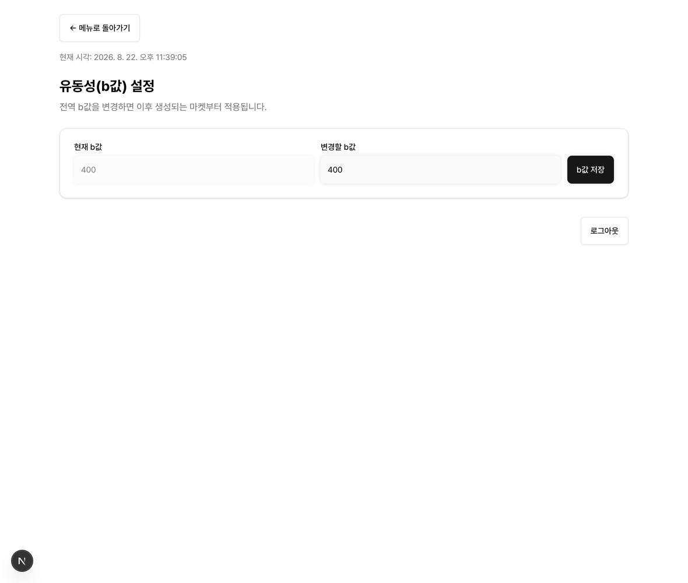
유동성 b값이 A → B 로 변경되었습니다. 이후 생성되는 마켓부터 적용됩니다.가 뜹니다.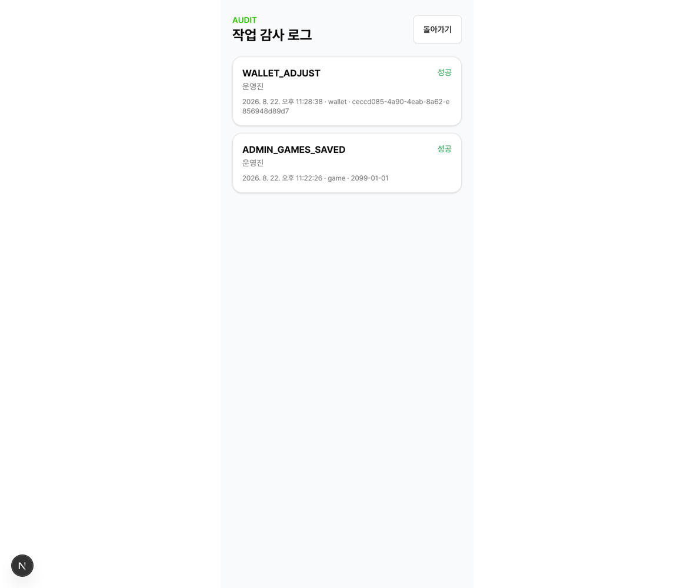
사고 조사 때 "언제 무슨 일이 있었나"를 좁히는 용도로 씁니다. (10장 시나리오 F 참고)
시즌 번호를 입력하면 해당 시즌의 회원 수, 회원별 잔액, 주문·포지션·거래 건수를 한 화면에서 확인할 수 있습니다. 회원 이름이나 학번으로 현재 페이지 안에서 찾을 수 있고, 필요한 경우 현재 목록을 CSV로 내려받을 수 있습니다. 이 화면은 조회 전용이라 회원 잔액이나 거래 기록을 바꾸지 않습니다.
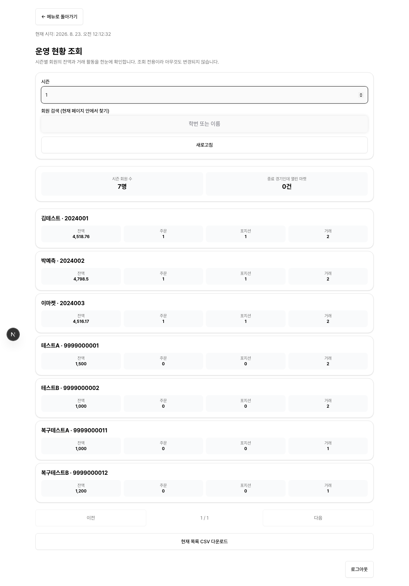
빨간 글씨는 대부분 고장이 아니라 안전장치입니다. 뜻을 알면 바로 해결됩니다.
| 메시지 | 뜻과 해결 |
|---|---|
비밀번호를 확인해주세요. | 관리자 비밀번호 오타. 대소문자·숫자를 확인하세요. |
종료되지 않은 경기는 정산할 수 없습니다 (현재 상태: SCHEDULED) | 경기 관리에서 상태를 '경기 종료'로 바꾸고 저장한 뒤 다시 정산하세요. (5장) |
취소된 경기는 정산할 수 없습니다. 마켓 취소(원가 환급)를 사용하세요 | 정산이 아니라 CANCEL 버튼을 눌러야 합니다. (6-5) |
이미 정산된 마켓입니다 | 일반 정산 버튼으로 중복 정산할 수 없다는 뜻입니다. 결과가 틀렸다면 정산 점검의 복구 절차를 사용하세요. (10장 시나리오 A) |
정산 결과를 선택하세요. 경기 결과가 자동 감지되지 않았습니다. | 점수가 비어 있어 자동 감지가 안 된 상태. 드롭다운에서 직접 고르거나 점수를 먼저 저장하세요. |
시즌이 활성 상태가 아니어서 정산할 수 없습니다 | 지난 시즌 경기입니다. 운영진 화면에서는 해결 불가 → 개발 담당자 문의. |
활성 시즌이 없습니다 | 시즌을 종료만 하고 새로 시작하지 않은 상태. 시즌 관리에서 다음 시즌을 시작하세요. (11장) |
HOME + AWAY + DRAW 합계는 100이어야 합니다. | 초기 가격 입력 오류. 47.5 / 47.5 / 5.0으로 되돌리세요. |
승인 필요: ○○ … 팀 관리의 승인 대기 목록으로 보냈습니다 | 외부 팀명을 못 알아본 경우. 팀 관리 → 승인 대기에서 연결 후 다시 자동 채우기. (12-1) |
잔액이 음수가 되어 실행할 수 없습니다. | 차감액이 회원 잔액보다 큽니다. 회수 가능한 만큼만 처리하고 기록을 남기세요. |
조정 사유와 내부 메모는 필수입니다. | 지갑 조정은 두 칸을 모두 채워야 실행됩니다. |
입력한 학번의 유저를 찾을 수 없습니다. | 학번 오타이거나 미등록 회원. 회원 관리에서 확인하세요. |
이 마켓에는 되돌릴 정산 기록이 없습니다. | 복구 스냅샷이 없는 과거 정산입니다. 반복 실행하지 말고 마켓 ID를 개발 담당자에게 전달하세요. (7-2, 10-A) |
보상 차감 잔액이 부족한 사용자가 있습니다 | 잘못 지급된 코인을 이미 사용한 회원이 있어 자동 복구가 차단된 상태입니다. 부족 내역을 캡처해 개발 담당자에게 전달하세요. (10-A) |
이미 참가자 거래가 있어 삭제할 수 없습니다. | 경기를 지우면 안 되는 상태. 수정하거나 CANCEL로 처리하세요. (10-E) |
function public.weekly_grant_next_run(...) does not exist | 2026-08-23 복구된 과거 서버 장애입니다. 다시 보이면 버튼을 반복하지 말고 화면을 캡처해 개발 담당자에게 전달하세요. (9-2) |
관리자 요청 처리에 실패했습니다. (운영 현황 조회) | 2026-08-23 권한 오류가 복구됐습니다. 새로고침 후에도 계속되면 시즌 번호와 화면을 캡처해 문의하세요. (12-4) |
type "public.game_status" does not exist | 2026-08-23 경기 저장 함수가 복구된 과거 장애입니다. 다시 보이면 저장 버튼을 반복하지 말고 날짜와 화면을 캡처해 개발 담당자에게 전달하세요. |
운영자 로그인이 필요합니다. | 8시간 세션 만료. 다시 로그인하세요. |
| # | 금지 행동 | 이유 |
|---|---|---|
| 1 | 결과를 확인하지 않고 정산 실행 누르기 | 되돌리기가 사실상 불가능. 수십 명 잔액이 즉시 바뀝니다. |
| 2 | 취소된 경기를 정산하기 | 있지도 않은 승패로 돈이 나갑니다. CANCEL을 쓰세요. |
| 3 | 거래가 걸린 경기를 삭제하기 | 거래 기록과 코인 정합성이 깨집니다. 먼저 점검하세요. |
| 4 | 같은 팀을 새로 만들어 쓰기 | 데이터가 갈라져 마켓·통계가 어긋납니다. 별칭을 등록하세요. |
| 5 | 미정산 경기를 둔 채 시즌 전환하기 | 시스템이 막지만, 억지로 진행하면 회원 코인이 묶입니다. |
| 6 | 이유 없이 b값 바꾸기 | 가격 움직임이 급변해 회원 신뢰가 깨집니다. |
| 7 | 사유·메모 없이 지갑 조정하기 | 나중에 아무도 이유를 모릅니다. (시스템도 빈칸을 막습니다) |
| 8 | 관리자 비밀번호 공유·유출 | 계정이 하나뿐이라 누구든 전 회원의 코인을 바꿀 수 있습니다. |
[ 경기 전 ]
[ 경기 후 ]
비밀번호를 공유하는 구조라 시스템 로그만으로는 책임 소재와 경위를 알 수 없습니다. 정산·지급·조정은 반드시 아래처럼 남기세요.
| 날짜/시각 | 담당자 | 작업 | 대상 | 결과 메시지 / 메모 |
|---|---|---|---|---|
| 8/21 23:10 | 홍길동 | 정산 실행 | 롯데 vs 두산 (마켓 709) | AWAY / 12명, 3,400코인 |
| 8/21 23:12 | 홍길동 | CANCEL | SSG vs KT (마켓 710) | 우천 취소, 8명 환급 |
| 항목 | 상태 | 대안 |
|---|---|---|
| 정산 자동 되돌리기 | 사용 가능 (신규 정산부터 스냅샷 저장) | 과거 스냅샷 없음·잔액 부족 시 개발 담당자 문의 (10-A) |
| 주간 코인 지급 정책 | 사용 가능 | 수동 실행 전 중복 지급 여부 확인 (9-2) |
| 운영 현황 조회 | 사용 가능 (조회 전용) | 상세 원장은 지갑 조정 화면 이용 (12-4) |
| 경기 관리 저장 | 사용 가능 (2026-08-23 타입 오류 복구) | 같은 오류 재발 시 저장 반복 금지·캡처 전달 |
| 운영자 개인 계정 | 없음 (공용 비밀번호 1개) | 수기 운영 로그로 보완 (14-3) |
| 정산 실행 감사 기록 | 감사 로그에 남지 않음 | 정산 직후 결과 메시지를 로그에 기록 (14-3) |
운영에서 제일 중요한 건 완벽함이 아니라 일관성과 기록입니다. 매일 같은 순서로(등록 → 결과 → 정산), 매번 같은 방식으로 기록하면 사고는 거의 나지 않고, 나더라도 10분 안에 원인을 찾을 수 있습니다. 헷갈리면 멈추고 물어보세요. 잘못 누른 버튼보다 늦게 처리된 정산이 언제나 낫습니다.